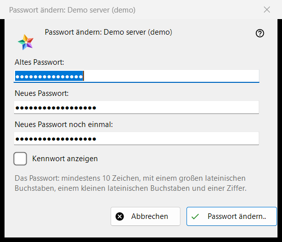
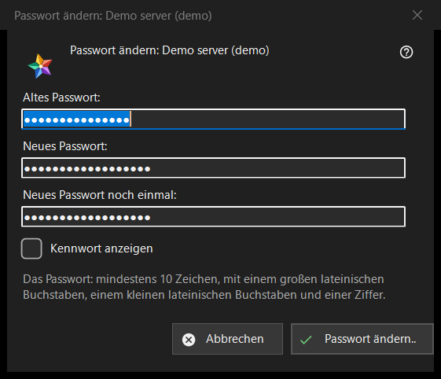

Passwort ändern
Verwendungszweck
Ändert das Passwort Ihres Kontos auf einem Austauschserver. Das Fenster öffnet sich über die Schaltfläche «Passwort ändern..» eines Servereintrags im Abschnitt «Meine Geräte» der Ressourcenliste; die Schaltfläche erscheint, solange dieser Server online ist. Die Überschrift nennt das Konto.


In dieser Reihenfolge
- Geben Sie das alte Passwort ein.
- Geben Sie das neue Passwort zweimal ein.
- Drücken Sie «Passwort ändern..»; «Abbrechen» schließt das Fenster und sendet nichts.
Die Elemente
Die drei Felder
«Altes Passwort:», «Neues Passwort:» und «Neues Passwort noch einmal:»; «Kennwort anzeigen» macht sie sichtbar. Die Felder werden beim Schließen des Fensters geleert. Das Fenster sammelt nur die Passwörter: Das Programm sendet sie über die Verbindung dieses Eintrags an den Server.
Die Passwortregel
Der Hinweis lautet: mindestens 10 Zeichen, mit einem lateinischen Großbuchstaben, einem lateinischen Kleinbuchstaben und einer Ziffer. Das Fenster prüft dies, bevor es etwas sendet, und nennt den fehlenden Teil, zum Beispiel «Das Passwort ist kürzer als 10 Zeichen.» oder «Das Passwort hat keine Ziffer.»; außerdem sagt es «Geben Sie das alte Passwort an.» und «Die beiden Passwörter stimmen nicht überein.». Der Server wendet dieselbe Regel an und hat das letzte Wort.
Nach der Änderung
Bei Erfolg lautet der Status «Das Passwort ist geändert. Dieser Computer arbeitet weiter, und die anderen Geräte des Kontos müssen sich neu anmelden.» Die Ablehnungen: das alte Passwort passte nicht; zu viele Versuche (eine Minute warten und wiederholen); der Server hat die Änderung abgelehnt; es gibt keine Verbindung zum Server (verbinden und wiederholen).